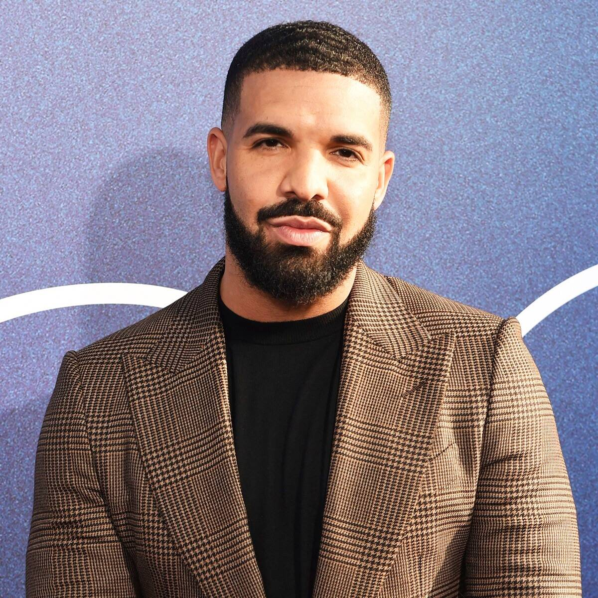

EXERCÍCIO PARTE 1
Lista de convocados da Seleção Brasileira 2020
- Goleiros
- Ederson
- Weverton
- Ivan
- Zagueiros
- Thiago Silva
- Marquinhos
- Eder Militão
- Felipe
- Laterais
- Dani Alves
- Danilo
- Renan Lodi
- Alex Sandro
- Meio Campistas
- Arthur
- Casemiro
- Fabinho
- Everton Ribeiro
- Bruno Guimarães
- Atacantes
- Philippe Coutinho
- Gabriel Jesus
- Richarlison
- Roberto Firmino
- Gabigol
- Neymar
- Everton
- Bruno Henrique
EXERCÍCIO PARTE 2

Drake
Nome Completo: Aubrey Drake Graham
Idade: 33 anos(24 de outrubro de 1986)
Altura: 1,82 m
Nacionalidade: Canadense
Ocupação: Rapper, cantor, compositor, produtor musical, ator e empresário
Curiosidade Drake inicialmente ganhou reconhecimento como ator na série de televissão de drama adolescente Degrassi: The Next Generation, no início dos anos 2000
Algumas Músicas
- Toosie Slide
- Pain 1993(with Playboi Carti)
- War
- Demons (feat. Fivio Foregin & Sosa Geek)